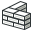

Il modulo Architettura fornisce a FreeCAD un flusso di lavoro di tipo BIM con funzioni di supporto del formato IFC per enti architettonici completamente parametrici, quali pareti, elementi strutturali o finestre, e una ricca produzione di documenti 2D.
Il modulo Architettura condivide gli strumenti tradizionali di disegno con il modulo  Draft.
Draft.
Nota: La funzionalità BIM di FreeCAD è ora suddivisa progressivamente in questo Arch Workbench, che contiene tutti gli strumenti BIM di base e gli BIM Workbench addon, che si possono installare tramite il menu Strumenti → Addon Manager, che aggiunge un nuovo livello di interfaccia in cima agli strumenti Arch, con l'obiettivo di rendere facile e più intuitivo il flusso di lavoro BIM in FreeCAD.

Contents
Strumenti
Strumenti di costruzione
Strumenti per creare gli oggetti architettonici.
-
 Parete: Crea un muro tramite uno schizzo o utilizzando come base un oggetto selezionato
Parete: Crea un muro tramite uno schizzo o utilizzando come base un oggetto selezionato -
 Struttura: Crea un elemento strutturale tramite uno schizzo o utilizzando come base un oggetto selezionato
Struttura: Crea un elemento strutturale tramite uno schizzo o utilizzando come base un oggetto selezionato
- Strumenti armatura
-
 Armatura dritta: Crea una armatura diritta in un elemento strutturale selezionato
Armatura dritta: Crea una armatura diritta in un elemento strutturale selezionato - Armatura a U: Crea una armatura piegata a U in un elemento strutturale selezionato
-
 Armatura a L: Crea una armatura a forma di L in un elemento strutturale selezionato
Armatura a L: Crea una armatura a forma di L in un elemento strutturale selezionato -
 Armatura sagomata: Crea una armatura sagomata in un elemento strutturale selezionato
Armatura sagomata: Crea una armatura sagomata in un elemento strutturale selezionato -
 Staffe armatura: Crea le staffe di una armatura in un elemento strutturale selezionato
Staffe armatura: Crea le staffe di una armatura in un elemento strutturale selezionato -
 Armatura elicoidale: Crea una armatura elicoidale in un elemento strutturale selezionato
Armatura elicoidale: Crea una armatura elicoidale in un elemento strutturale selezionato -
 Armatura: Crea l'armatura in un elemento strutturale estrudendo uno schizzo o utilizzando come base un oggetto selezionato
Armatura: Crea l'armatura in un elemento strutturale estrudendo uno schizzo o utilizzando come base un oggetto selezionato
-
{kind=link}
-
 Piano: Crea un piano che comprende gli oggetti selezionati
Piano: Crea un piano che comprende gli oggetti selezionati -
 Edificio: Crea un edificio che comprende gli oggetti selezionati
Edificio: Crea un edificio che comprende gli oggetti selezionati -
 Sito: Crea un sito che comprende gli oggetti selezionati
Sito: Crea un sito che comprende gli oggetti selezionati -
 Finestra: Crea una finestra utilizzando come base un oggetto selezionato
Finestra: Crea una finestra utilizzando come base un oggetto selezionato -
 Piano di sezione: Aggiunge un oggetto Piano di sezione al documento
Piano di sezione: Aggiunge un oggetto Piano di sezione al documento
- Strumenti asse
-
 Asse: Aggiunge al documento un sistema di assi in 1 direzione
Asse: Aggiunge al documento un sistema di assi in 1 direzione -
 Sistema di assi: Aggiunge al documento un sistema di assi composto da più assi
Sistema di assi: Aggiunge al documento un sistema di assi composto da più assi -
 Griglia: Inserisce un oggetto tipo griglia nel documento.
Griglia: Inserisce un oggetto tipo griglia nel documento.
-
-
 Tetto: Crea le falde del tetto partendo da una faccia selezionata
Tetto: Crea le falde del tetto partendo da una faccia selezionata -
 Spazio: Crea un oggetto spazio
Spazio: Crea un oggetto spazio -
 Scala: Crea un oggetto scala
Scala: Crea un oggetto scala
- Strumenti pannelli
-
 Pannello: Crea un oggetto pannello basato su un oggetto 2D selezionato
Pannello: Crea un oggetto pannello basato su un oggetto 2D selezionato -
 Sagoma pannello: Crea una vista in 2D di un pannello disponibile dalla versione 0.17
Sagoma pannello: Crea una vista in 2D di un pannello disponibile dalla versione 0.17
-
-
 Foglio pannello: Creates a 2D cut sheet including panel cuts or other 2D objects disponibile dalla versione 0.17
Foglio pannello: Creates a 2D cut sheet including panel cuts or other 2D objects disponibile dalla versione 0.17
-
-
 Nido: Consente di nidificare diversi oggetti piatti all'interno di una forma contenitore disponibile dalla versione 0.17
Nido: Consente di nidificare diversi oggetti piatti all'interno di una forma contenitore disponibile dalla versione 0.17
-
-
 Telaio: Crea un oggetto frame basato su uno schema selezionato
Telaio: Crea un oggetto frame basato su uno schema selezionato -
 Arredo: Crea un oggetto di arredamento
Arredo: Crea un oggetto di arredamento
- Strumenti tubazioni disponibile dalla versione 0.17
-
 Tubo: Crea un tubo disponibile dalla versione 0.17
Tubo: Crea un tubo disponibile dalla versione 0.17
-
-
 Raccordo: Crea una connessione a angolo o un tee (raccordo) tra 2 o 3 tubi selezionati disponibile dalla versione 0.17
Raccordo: Crea una connessione a angolo o un tee (raccordo) tra 2 o 3 tubi selezionati disponibile dalla versione 0.17
-
- Strumenti materiali
-
 Materiale: Crea un materiale e lo attribuisce agli oggetti selezionati
Materiale: Crea un materiale e lo attribuisce agli oggetti selezionati -
 Multi-Materiale: Crea un materiale e lo attribuisce agli oggetti selezionati disponibile dalla versione 0.17
Multi-Materiale: Crea un materiale e lo attribuisce agli oggetti selezionati disponibile dalla versione 0.17
-
-
 Scheda: Crea diversi tipi di schede
Scheda: Crea diversi tipi di schede
Strumenti di modifica
Strumenti per modificare gli oggetti architettonici.
-
 Taglia con un piano: Taglia un oggetto secondo un piano.
Taglia con un piano: Taglia un oggetto secondo un piano. -
 Aggiungi componente: Aggiunge oggetti ad un componente
Aggiungi componente: Aggiunge oggetti ad un componente -
 Rimuovi componente: Sottrae o rimuove oggetti da un componente
Rimuovi componente: Sottrae o rimuove oggetti da un componente -
 Ispeziona: Entra o esce dalla modalità ispezione
Ispeziona: Entra o esce dalla modalità ispezione
Utilità
Strumenti aggiuntivi di aiuto per operazioni specifiche.
-
 Componenti: Crea un componente Arch non parametrico
Componenti: Crea un componente Arch non parametrico -
 Clona componente: Clona un componente
Clona componente: Clona un componente -
 Dividi mesh: Divide una maglia selezionata in componenti separati
Dividi mesh: Divide una maglia selezionata in componenti separati -
 Forma da Mesh: Converte una maglia in una forma, unificando le facce complanari
Forma da Mesh: Converte una maglia in una forma, unificando le facce complanari -
 Seleziona le mesh non-manifold: Seleziona tutti gli oggetti maglia non-solidi della selezione corrente o del documento
Seleziona le mesh non-manifold: Seleziona tutti gli oggetti maglia non-solidi della selezione corrente o del documento -
 Rimuovi forma: Converte le forme basate su cubi in oggetti architettonici completamente parametrici
Rimuovi forma: Converte le forme basate su cubi in oggetti architettonici completamente parametrici -
 Chiudi aperture: Chiude le aperture in un oggetto selezionato basato su forme
Chiudi aperture: Chiude le aperture in un oggetto selezionato basato su forme -  Unisci pareti: Unisce due o più pareti
-
 Verifica: Controlla se gli oggetti selezionati sono solidi e non contengono difetti
Verifica: Controlla se gli oggetti selezionati sono solidi e non contengono difetti -
 Ifc Explorer: Esplora il contenuto di un file IFC
Ifc Explorer: Esplora il contenuto di un file IFC -
 Attiva/Disattiva IFC Brep: Forza l'esportazione IfcFacetedBrep di un oggetto selezionato.
Attiva/Disattiva IFC Brep: Forza l'esportazione IfcFacetedBrep di un oggetto selezionato. -
 3 Viste da mesh: Crea la vista superiore, frontale e laterale di un mesh.
3 Viste da mesh: Crea la vista superiore, frontale e laterale di un mesh. - Crea un foglio IFC...:
-
 Mostra/Nascondi sottocomponenti: Mostra o nasconde i sotto-componenti di un oggetto Arch.
Mostra/Nascondi sottocomponenti: Mostra o nasconde i sotto-componenti di un oggetto Arch.
{kind=link}
Preferences
-
 Preferenze...: Preferenze disponibile per Arch Module.
Preferenze...: Preferenze disponibile per Arch Module.
Formati dei file
- IFC : Industry foundation Classes
- DAE : Formato mesh Collada
- OBJ : Formato mesh Obj (solo esportazione)
- JSON : Formato JavaScript Object Notation (solo esportazione)
- 3DS : Formato 3DS (solo importazione)
API
Il Modulo Arch può essere usato negli script python e macro utilizzando la funzione Arch Python API
Tutorial
- Tutorial di Arch
- Breve panoramica su Arch nel blog di Yorik
- Presentazione video dell'ambiente Arch
- Importare da STL o OBJ
- Esportare in STL o OBJ
- Tutorial Pannello di Arch
- Il capitolo sulla modellazione BIM nel manuale di FreeCAD